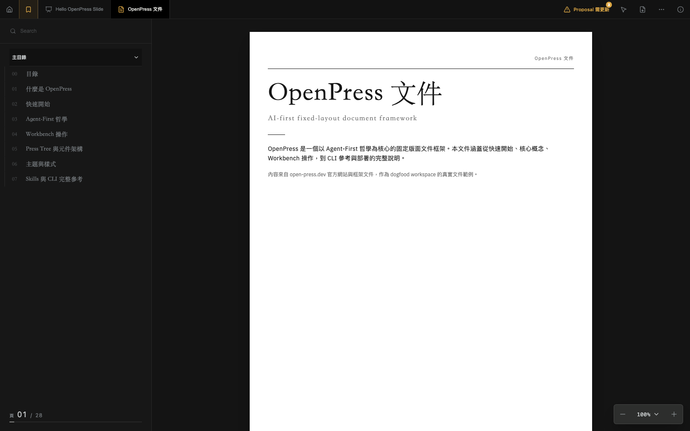

open-press
Open source · Agent-first
Documents that stay inspectable.
A real workspace for turning source material into fixed-layout pages, slides, and exports—without losing the source.
Editable sourceWorkbench reviewPDF · PNG · Word

open-press.dev · MIT licensed